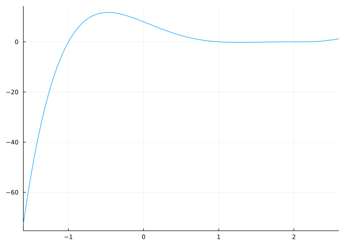
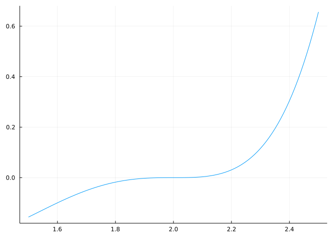
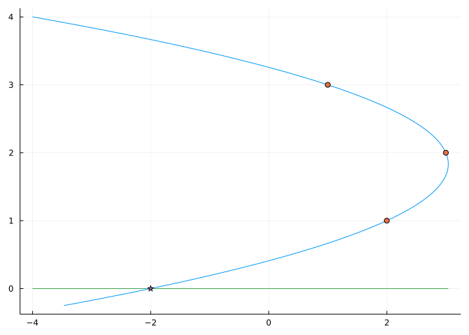

import CalculusWithJulia
using Plots
using Polynomials
using RealPolynomialRoots
import SymPy # imported only: some functions, e.g. degree, need qualification13 The Polynomials package
This section will use the following add-on packages:
While SymPy can be used to represent polynomials, there are also native Julia packages available for this and related tasks. These packages include Polynomials, MultivariatePolynomials, and AbstractAlgebra, among many others. (A search on juliahub.com found over \(50\) packages matching “polynomial”.) We will look at the Polynomials package in the following, as it is straightforward to use and provides the features we are looking at for univariate polynomials.
13.1 Construction
The polynomial expression \(p = a_0 + a_1\cdot x + a_2\cdot x^2 + \cdots + a_n\cdot x^n\) can be viewed mathematically as a vector of numbers with respect to some “basis”, which for standard polynomials, as above, is just the set of monomials, \(1, x, x^2, \dots, x^n\). With this viewpoint, the polynomial \(p\) can be identified with the vector [a0, a1, a2, ..., an]. The Polynomials package provides a wrapper for such an identification through the Polynomial constructor. We have previously loaded this add-on package.
To illustrate, the polynomial \(p = 3 + 4x + 5x^2\) is constructed with
p = Polynomial([3,4,5])
3 + 4∙x + 5∙x2
where the vector [3,4,5] represents the coefficients. The polynomial \(q = 3 + 5x^2 + 7x^4\) has some coefficients that are \(0\), these too must be indicated on construction, so we would have:
q = Polynomial([3,0,5,0,7])
3 + 5∙x2 + 7∙x4
The coeffs function undoes Polynomial, returning the coefficients from a Polynomial object.
coeffs(q)5-element Vector{Int64}:
3
0
5
0
7Once defined, the usual arithmetic operations for polynomials follow:
p + q
6 + 4∙x + 10∙x2 + 7∙x4
p*q + p^2
18 + 36∙x + 76∙x2 + 60∙x3 + 71∙x4 + 28∙x5 + 35∙x6
A polynomial has several familiar methods, such as degree:
degree(p), degree(q)(2, 4)The zero polynomial has degree -1, by convention.
Polynomials may be evaluated using function notation, that is:
p(1)12This blurs the distinction between a polynomial expression – a formal object consisting of an indeterminate, coefficients, and the operations of addition, subtraction, multiplication, and non-negative integer powers – and a polynomial function.
The polynomial variable, in this case 1x, can be returned by variable:
x = variable(p)
x
This variable is a Polynomial object, so can be manipulated as a polynomial; we can then construct polynomials through expressions like:
r = (x-2)^2 * (x-1) * (x+1)
-4 + 4∙x + 3∙x2 - 4∙x3 + x4
The product is expanded for storage by Polynomials, which may not be desirable for some uses. A new variable can produced by calling variable(); so we could have constructed p by:
x = variable()
3 + 4x + 5x^2
3 + 4∙x + 5∙x2
A polynomial in factored form, as r above is, can be constructed from its roots. Above, r has roots \(2\) (twice), \(1\), and \(-1\). Passing these as a vector to fromroots re-produces r:
fromroots([2,2,1,-1])
-4 + 4∙x + 3∙x2 - 4∙x3 + x4
The fromroots function is basically the factor thereom which links the factored form of the polynomial with the roots of the polynomial: \((x-k)\) is a factor of \(p\) if and only if \(k\) is a root of \(p\). By combining a factor of the type \((x-k)\) for each specified root, the polynomial can be constructed by multiplying its factors. For example, using prod and a generarator, we would have:
x = variable()
prod(x - k for k in [2,2,1,-1])
-4 + 4∙x + 3∙x2 - 4∙x3 + x4
The Polynomials package has different ways to represent polynomials, and a factored form can also be used. For example, the fromroots function constructs polynomials from the specified roots and FactoredPolynomial leaves these in a factored form:
fromroots(FactoredPolynomial, [2, 2, 1, -1])
(x - 2)² * (x + 1) * (x - 1)
This form is helpful for some operations, for example polynomial multiplication and positive integer exponentiation, but not others such as addition of polynomials, where such polynomials must first be converted to the standard basis to add and are then converted back into a factored form.
The indeterminate, or polynomial symbol is a related, but different concept to variable. Polynomials are stored as a collection of coefficients, an implicit basis, and a symbol, in the above this symbol is :x. A polynomial’s symbol is checked to ensure that polynomials with different symbols are not algebraically combined, except for the special case of constant polynomials. The symbol is specified through a second argument on construction:
s = Polynomial([1,2,3], "t")
1 + 2∙t + 3∙t2
As r uses “x”, and s a “t” the two can not be added, say:
r + sLoadError: ArgumentError: Polynomials have different indeterminates13.2 Graphs
Polynomial objects have a plot recipe defined – plotting from the Plots package should be as easy as calling plot:
plot(r, legend=false) # suppress the legend
The choice of domain is heuristically identified; and it can be manually adjusted, as with:
plot(r, 1.5, 2.5, legend=false)
13.3 Roots
The default plot recipe checks to ensure the real roots of the polynomial are included in the domain of the plot. To do this, it must identify the roots. This is done numerically by the roots function, as in this example:
x = variable()
p = x^5 - x - 1
roots(p)5-element Vector{ComplexF64}:
-0.7648844336005849 - 0.35247154603172626im
-0.7648844336005849 + 0.35247154603172626im
0.18123244446987605 - 1.0839541013177107im
0.18123244446987605 + 1.0839541013177107im
1.1673039782614187 + 0.0imA consequence of the fundamental theorem of algebra and the factor theorem is that any fifth degree polynomial with integer coefficients has \(5\) roots, where possibly some are complex. For real coefficients, these complex values must come in conjugate pairs, which can be observed from the output. The lone real root is approximately 1.1673039782614187. This value being a numeric approximation to the irrational root.
Note
SymPy also has a roots function. If both Polynomials and SymPy are used together, calling roots must be qualified, as with Polynomials.roots(...). Similarly, degree is provided in both, so it too must be qualified.
The roots function numerically identifies roots. As such, it is susceptible to floating point issues. For example, the following polynomial has one root with multiplicity \(5\), but \(5\) distinct roots are numerically identified:
x = variable()
p = (x-1)^5
roots(p)5-element Vector{ComplexF64}:
0.9990471550471702 + 0.0im
0.9997060762685409 - 0.0009060415877147721im
0.9997060762685409 + 0.0009060415877147721im
1.000770346207878 - 0.0005593476807788428im
1.000770346207878 + 0.0005593476807788428imThe Polynomials package has the multroot function to identify roots of polynomials when there are multiplicities expected. This function is not exported, so is called through:
x = variable()
p = (x-1)^5
Polynomials.Multroot.multroot(p)(values = [1.0], multiplicities = [5], κ = 0.1348399724926484, ϵ = 0.0)Floating point error can also prevent the finding of real roots. For example, this polynomial has \(3\) real roots, but roots finds but \(1\), as the two nearby ones are identified as complex:
x = variable()
p = -1 + 254x - 16129x^2 + x^9
roots(p)9-element Vector{ComplexF64}:
-3.5980557124631396 - 1.7316513703738028im
-3.5980557124631396 + 1.7316513703738028im
-0.8903404519370821 - 3.8909853177372544im
-0.8903404519370821 + 3.8909853177372544im
0.007874015748031492 - 2.1956827901729616e-10im
0.007874015748031492 + 2.1956827901729616e-10im
2.486125235439536 - 3.1203279635732852im
2.486125235439536 + 3.1203279635732852im
3.9887938264253098 + 0.0imThe RealPolynomialRoots package, loaded at the top of this section, can assist in the case of identifying real roots of square-free polynomials (no multiple roots). For example:
ps = coeffs(-1 + 254x - 16129x^2 + x^9)
st = ANewDsc(ps)
refine_roots(st)3-element Vector{BigFloat}:
3.988793826425306473638920954012808890654446404984951111866613118478052117645201
0.007874015750717263676264993327600464885217898465929847025318969658324333767322871
0.00787401574534565204590641498965378065315830404232728760407607394724830745723147613.4 Fitting a polynomial to data
The fact that two distinct points determine a line is well known. Deriving the line is easy. Say we have two points \((x_0, y_0)\) and \((x_1, y_1)\). The slope is then
\[ m = \frac{y_1 - y_0}{x_1 - x_0}, \quad x_1 \neq x_0 \]
The line is then given from the point-slope form by, say, \(y= y_0 + m\cdot (x-x_0)\). This all assumes, \(x_1 \neq x_0\), as were that the case the slope would be infinite (though the vertical line \(x=x_0\) would still be determined).
A line, \(y=mx+b\) can be a linear polynomial or a constant depending on \(m\), so we could say \(2\) points determine a polynomial of degree \(1\) or less. Similarly, \(3\) distinct points determine a degree \(2\) polynomial or less, \(\dots\), \(n+1\) distinct points determine a degree \(n\) or less polynomial. Finding a polynomial, \(p\) that goes through \(n+1\) points (i.e., \(p(x_i)=y_i\) for each \(i\)) is called polynomial interpolation. The main theorem is:
Polynomial interpolation theorem: There exists a unique polynomial of degree \(n\) or less that interpolates the points \((x_0,y_0), (x_1,y_1), \dots, (x_n, y_n)\) when the \(x_i\) are distinct.
(Uniqueness follows as suppose \(p\) and \(q\) satisfy the above, then \((p-q)(x) = 0\) at each of the \(x_i\) and is of degree \(n\) or less, so must be the \(0\) polynomial. Existence comes by construction. See the Lagrange basis in the questions.)
Knowing we can succeed, we approach the problem of \(3\) points, say \((x_0, y_0)\), \((x_1,y_1)\), and \((x_2, y_2)\). There is a polynomial \(p = a\cdot x^2 + b\cdot x + c\) with \(p(x_i) = y_i\). This gives \(3\) equations for the \(3\) unknown values \(a\), \(b\), and \(c\):
\[\begin{align*} a\cdot x_0^2 + b\cdot x_0 + c &= y_0\\ a\cdot x_1^2 + b\cdot x_1 + c &= y_1\\ a\cdot x_2^2 + b\cdot x_2 + c &= y_2\\ \end{align*}\]
Solving this with SymPy is tractable. A comprehension is used below to create the \(3\) equations; the zip function is a simple means to iterate over \(2\) or more iterables simultaneously:
SymPy.@syms a b c xs[0:2] ys[0:2]
eqs = [a*xi^2 + b*xi + c ~ yi for (xi,yi) in zip(xs, ys)]
abc = SymPy.solve(eqs, [a,b,c])sys:1: SymPyDeprecationWarning:
non-Expr objects in a Matrix is deprecated. Matrix represents
a mathematical matrix. To represent a container of non-numeric
entities, Use a list of lists, TableForm, NumPy array, or some
other data structure instead.
See https://docs.sympy.org/latest/explanation/active-deprecations.html#deprecated-non-expr-in-matrix
for details.
This has been deprecated since SymPy version 1.9. It
will be removed in a future version of SymPy.
Dict{Any, Any} with 3 entries:
a => (-xs₀*ys₁ + xs₀*ys₂ + xs₁*ys₀ - xs₁*ys₂ - xs₂*ys₀ + xs₂*ys₁)/(xs₀^2*xs₁ …
b => (xs₀^2*ys₁ - xs₀^2*ys₂ - xs₁^2*ys₀ + xs₁^2*ys₂ + xs₂^2*ys₀ - xs₂^2*ys₁)/…
c => (xs₀^2*xs₁*ys₂ - xs₀^2*xs₂*ys₁ - xs₀*xs₁^2*ys₂ + xs₀*xs₂^2*ys₁ + xs₁^2*x…As can be seen, the terms do get quite unwieldy when treated symbolically. Numerically, the fit function from the Polynomials package will return the interpolating polynomial. To compare,
fit(Polynomial, [1,2,3], [3,1,2])
8.0 - 6.5∙x + 1.5∙x2
and we can compare that the two give the same answer with, for example:
abc[b]((xs .=> [1,2,3])..., (ys .=> [3,1,2])...)\(- \frac{13}{2}\)
(Ignore the tricky way of substituting in each value of xs and ys for the symbolic values in x and y.)
Example Inverse quadratic interpolation
A related problem, that will arise when finding iterative means to solve for zeros of functions, is inverse quadratic interpolation. That is finding \(q\) that goes through the points \((x_0,y_0), (x_1, y_1), \dots, (x_n, y_n)\) satisfying \(q(y_i) = x_i\). (That is \(x\) and \(y\) are reversed, as with inverse functions.) For the envisioned task, where the inverse quadratic function intersects the \(x\) axis is of interest, which is at the constant term of the polynomial (as it is like the \(y\) intercept of typical polynomial). Let’s see what that is in general by replicating the above steps (though now the assumption is the \(y\) values are distinct):
SymPy.@syms a b c xs[0:2] ys[0:2]
eqs = [a*yi^2 + b*yi + c ~ xi for (xi, yi) in zip(xs,ys)]
abc = SymPy.solve(eqs, [a,b,c])
abc[c]\(\frac{xs₀ ys₁^{2} ys₂ - xs₀ ys₁ ys₂^{2} - xs₁ ys₀^{2} ys₂ + xs₁ ys₀ ys₂^{2} + xs₂ ys₀^{2} ys₁ - xs₂ ys₀ ys₁^{2}}{ys₀^{2} ys₁ - ys₀^{2} ys₂ - ys₀ ys₁^{2} + ys₀ ys₂^{2} + ys₁^{2} ys₂ - ys₁ ys₂^{2}}\)
We can graphically see the result for the specific values of xs and ys as follows:

13.5 Questions
Question
Do the polynomials \(p = x^4\) and \(q = x^2 - 2\) intersect?
Question
Do the polynomials \(p = x^4-4\) and \(q = x^2 - 2\) intersect?
Question
How many real roots does \(p = 1 + x + x^2 + x^3 + x^4 + x^5\) have?
Question
Mathematically we say the \(0\) polynomial has no degree. What convention does Polynomials use? (Look at degree(zero(Polynomial)).)
Question
Consider the polynomial \(p(x) = a_1 x - a_3 x^3 + a_5 x^5\) where
\[\begin{align*} a_1 &= 4(\frac{3}{\pi} - \frac{9}{16}) \\ a_3 &= 2a_1 -\frac{5}{2}\\ a_5 &= a_1 - \frac{3}{2}. \end{align*}\]
- Form the polynomial
pby first computing the \(a\)s and formingp=Polynomial([0,a1,0,-a3,0,a5]) - Form the polynomial
qby these commandsx=variable(); q=p(2x/pi)
The polynomial q, a \(5\)th-degree polynomial, is a good approximation of for the sine function.
Make graphs of both q and sin. Over which interval is the approximation (visually) a good one?
(This blog post shows how this approximation is valuable under some specific circumstances.)
Question
The polynomial
fromroots([1,2,3,3,5])
-90 + 213∙x - 184∙x2 + 74∙x3 - 14∙x4 + x5
has \(5\) sign changes and \(5\) real roots. For x = variable() use div(p, x-3) to find the result of dividing \(p\) by \(x-3\). How many sign changes are there in the new polynomial?
Question
The identification of a collection of coefficients with a polynomial depends on an understood basis. A basis for the polynomials of degree \(n\) or less, consists of a minimal collection of polynomials for which all the polynomials of degree \(n\) or less can be expressed through a combination of sums of terms, each of which is just a coefficient times a basis member. The typical basis is the \(n+1\) polynomials \(1, x, x^2, \dots, x^n\). However, though every basis must have \(n+1\) members, they need not be these.
A basis used by Lagrange is the following. Let there be \(n+1\) points distinct points \(x_0, x_1, \dots, x_n\). For each \(i\) in \(0\) to \(n\) define
\[ l_i(x) = \prod_{0 \leq j \leq n; j \ne i} \frac{x-x_j}{x_i - x_j} = \frac{(x-x_1)\cdot(x-x_2)\cdot \cdots \cdot (x-x_{i-1}) \cdot (x-x_{i+1}) \cdot \cdots \cdot (x-x_n)}{(x_i-x_1)\cdot(x_i-x_2)\cdot \cdots \cdot (x_i-x_{i-1}) \cdot (x_i-x_{i+1}) \cdot \cdots \cdot (x_i-x_n)}. \]
That is \(l_i(x)\) is a product of terms like \((x-x_j)/(x_i-x_j)\) except when \(j=i\).
What is is the value of \(l_0(x_0)\)?
Why?
What is the value of \(l_i(x_i)\)?
What is the value of \(l_0(x_1)\)?
Why?
What is the value of \(l_i(x_j)\) if \(i \ne j\)?
Suppose the \(x_0, x_1, \dots, x_n\) are the \(x\) coordinates of \(n+1\) distinct points \((x_0,y_0)\), \((x_1, y_1), \dots, (x_n,y_n).\) Form the polynomial with the above basis and coefficients being the \(y\) values. That is consider:
\[ p(x) = \sum_{i=0}^n y_i l_i(x) = y_0l_0(x) + y_1l_1(x) + \dots + y_nl_n(x) \]
What is the value of \(p(x_j)\)?
This last answer is why \(p\) is called an interpolating polynomial and this question shows an alternative way to identify interpolating polynomials from solving a system of linear equations.
Question
The Chebyshev (\(T\)) polynomials are polynomials which use a different basis from the standard basis. Denote the basis elements \(T_0\), \(T_1\), … where we have \(T_0(x) = 1\), \(T_1(x) = x\), and for bigger indices \(T_{i+1}(x) = 2xT_i(x) - T_{i-1}(x)\). The first others are then:
\[\begin{align*} T_2(x) &= 2xT_1(x) - T_0(x) = 2x^2 - 1\\ T_3(x) &= 2xT_2(x) - T_1(x) = 2x(2x^2-1) - x = 4x^3 - 3x\\ T_4(x) &= 2xT_3(x) - T_2(x) = 2x(4x^3-3x) - (2x^2-1) = 8x^4 - 8x^2 + 1 \end{align*}\]
With these definitions what is the polynomial associated to the coefficients \([0,1,2,3]\) with this basis?
Note
The Polynomials package has an implementation, so you can check your answer through convert(Polynomial, ChebyshevT([0,1,2,3])). Similarly, the SpecialPolynomials package has these and many other polynomial bases represented.
The ApproxFun package is built on top of polynomials expressed in this basis, as the Chebyshev polynomials have special properties which make them very suitable when approximating functions with polynomials. The ApproxFun package uses easier-to-manipulate polynomials to approximate functions very accurately, thereby being useful for investigating properties of non-linear functions leveraging properties for polynomials.